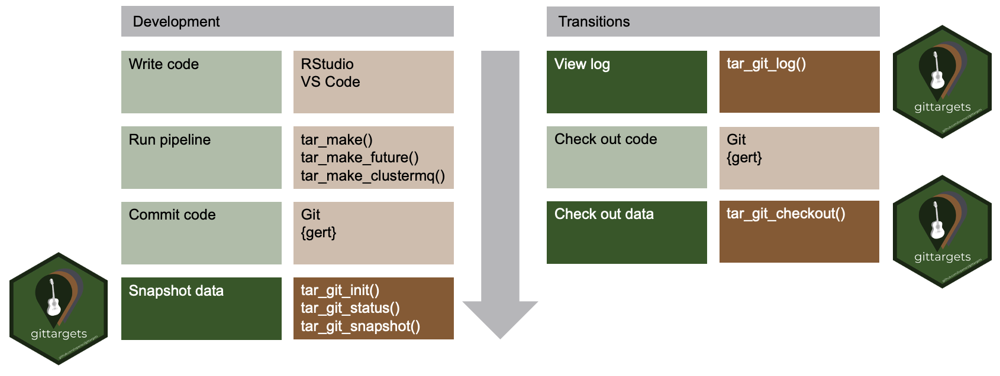

Version control systems such as Git help researchers track changes and history in data science projects, and the targets package minimizes the computational cost of keeping the latest results reproducible and up to date. The gittargets package combines these two capabilities. The targets data store becomes a version control repository and stays synchronized with the Git repository of the source code. Users can switch commits and branches without invalidating the targets pipeline.
Prerequisites
- Familiarity with the R programming language, covered in R for Data Science.
- Data science workflow management best practices.
- Git, covered in Happy Git and GitHub for the useR.
-
targets, which has resources on the documentation website.
Installation
Install the development version from R with:
install.packages("remotes")
remotes::install_github("wlandau/gittargets")You will also need command line Git, available at https://git-scm.com/downloads.[1] Please make sure Git is reachable from your system path environment variables. To control which Git executable gittargets uses, you may set the TAR_GIT environment variable with usethis::edit_r_environ() or Sys.setenv(). You will also need to configure your user name and user email at the global level using the instructions at https://git-scm.com/book/en/v2/Getting-Started-First-Time-Git-Setup (or gert::git_config_global_set()). Run tar_git_ok() to check installation and configuration.
tar_git_ok()
#> ✓ Git binary: /path/to/git
#> ✓ Git config global user name: your_user_name
#> ✓ Git config global user email: your_email@example.com
#> [1] TRUEThere are also backend-specific installation requirements and recommendations in the package vignettes.
How it works

Development
When you develop a reproducible analysis project, you write R code, run the pipeline, commit the code to a branch, and repeat. gittargets enters the picture at the end of each one of these development cycles. When the code files are up to date in the Git repository and the targets are up to date in the pipeline, gittargets can snapshot the targets data store to a local version control repository of its own. Data snapshots map to code commits in a way that facilitates data recovery. This mapping may differ from backend to backend, and the package vignettes explain the details.
Transitions
To reproducibly track alternative versions of your project, it is good practice to create multiple Git commits and Git branches for your R code during development. That way, you can transition among multiple versions of your code with git checkout. But your code commits probably do not contain the targets data store because it is too big to fit on GitHub. If so, switching to a different branch will most likely invalidate the targets pipeline, causing you to rerun hours of computation you should not have to run. But with gittargets, once you check out a branch in the code, you can also check out the corresponding snapshot of the data store. If you check out both the code commit and its matching data snapshot, then you will restore your old targets and they will all be up to date.
Performance
targets generates a large amount of data in _targets/objects/, so data snapshots and checkouts may take a long time. To work around performance limitations, you may wish to only snapshot the data at the most important milestones of your project. Please refer to the package vignettes for specific recommendations on optimizing performance.
Future directions
The first data versioning system in gittargets uses Git, which is designed for source code and may not scale to enormous amounts of compressed data. Future releases of gittargets may explore other potential data backends such as git-annex and DVC.
Code of Conduct
Please note that the gittargets project is released with a Contributor Code of Conduct. By contributing to this project, you agree to abide by its terms.
Citation
citation("gittargets")
#>
#> To cite gittargets in publications use:
#>
#> William Michael Landau (2021). gittargets: Version Control for the
#> targets Package. https://wlandau.github.io/gittargets/,
#> https://github.com/wlandau/gittargets.
#>
#> A BibTeX entry for LaTeX users is
#>
#> @Manual{,
#> title = {gittargets: Version Control for the Targets Package},
#> author = {William Michael Landau},
#> note = {https://wlandau.github.io/gittargets/, https://github.com/wlandau/gittargets},
#> year = {2021},
#> }[1] gert does not have these requirements, but gittargets does not exclusively rely on gert because libgit2 does not automatically work with git-lfs.